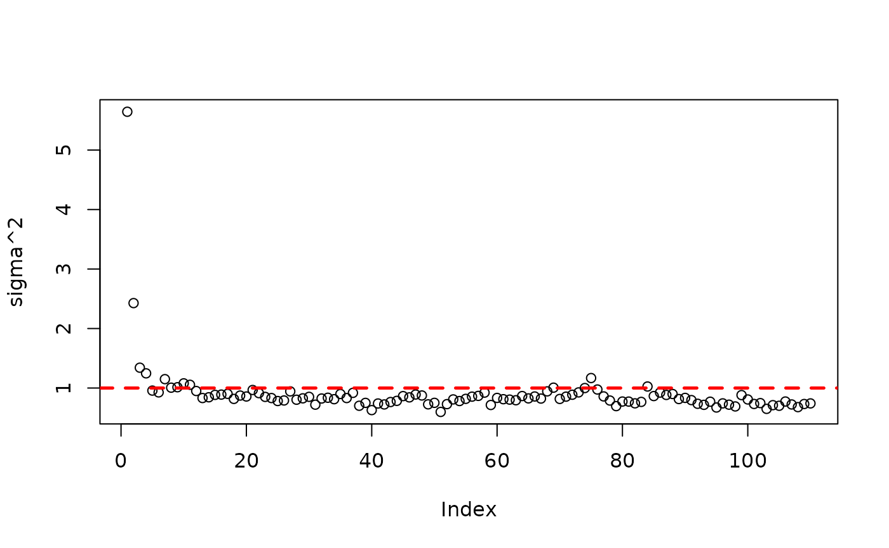
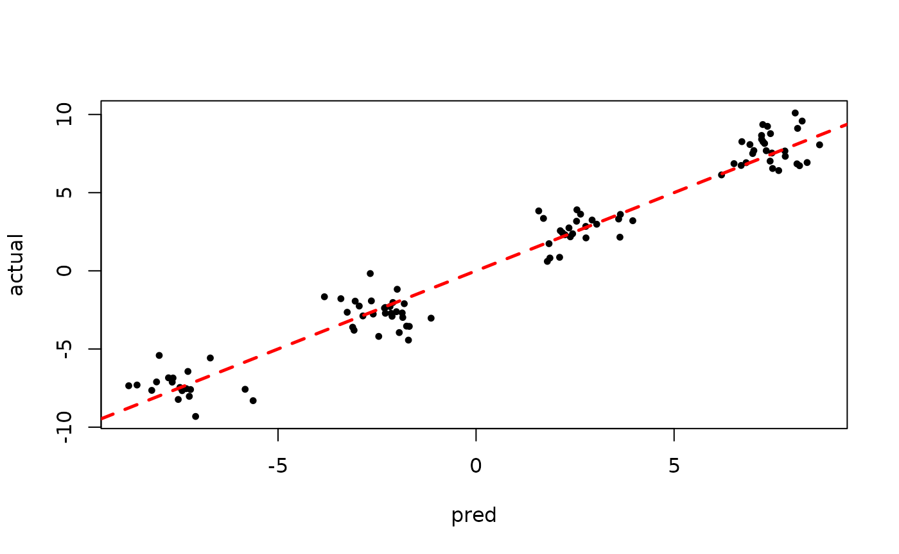

Deeper Dive on Sampled Forests in StochTree
TreeInspection.RmdWhile out of sample evaluation and MCMC diagnostics on parametric
BART components
(i.e. ,
the global error variance) are helpful, it’s important to be able to
inspect the trees in a BART / BCF model (or a custom tree ensemble
model). This vignette walks through some of the features
stochtree provides to query and understand the forests /
trees in a model.
To begin, we load the stochtree package.
Demo 1: Supervised Learning
Generate sample data where feature 10 is the only “important” feature.
# Generate the data
n <- 500
p_x <- 10
X <- matrix(runif(n*p_x), ncol = p_x)
f_XW <- (
((0 <= X[,10]) & (0.25 > X[,10])) * (-7.5) +
((0.25 <= X[,10]) & (0.5 > X[,10])) * (-2.5) +
((0.5 <= X[,10]) & (0.75 > X[,10])) * (2.5) +
((0.75 <= X[,10]) & (1 > X[,10])) * (7.5)
)
noise_sd <- 1
y <- f_XW + rnorm(n, 0, 1)*noise_sd
# Split data into test and train sets
test_set_pct <- 0.2
n_test <- round(test_set_pct*n)
n_train <- n - n_test
test_inds <- sort(sample(1:n, n_test, replace = FALSE))
train_inds <- (1:n)[!((1:n) %in% test_inds)]
X_test <- as.data.frame(X[test_inds,])
X_train <- as.data.frame(X[train_inds,])
W_test <- NULL
W_train <- NULL
y_test <- y[test_inds]
y_train <- y[train_inds]Sampling and Analysis
Run BART.
num_gfr <- 10
num_burnin <- 0
num_mcmc <- 100
bart_params <- list(keep_gfr = T)
bart_model <- stochtree::bart(
X_train = X_train, y_train = y_train, X_test = X_test,
num_gfr = num_gfr, num_burnin = num_burnin, num_mcmc = num_mcmc,
params = bart_params
)Inspect the MCMC samples

plot(rowMeans(bart_model$y_hat_test), y_test,
pch=16, cex=0.75, xlab = "pred", ylab = "actual")
abline(0,1,col="red",lty=2,lwd=2.5)
Check the variable split count in the last GFR sample
bart_model$mean_forests$get_forest_split_counts(10, p_x)
#> [1] 28 26 21 23 33 23 25 21 26 39
bart_model$mean_forests$get_aggregate_split_counts(p_x)
#> [1] 2857 2099 2366 2566 2907 2279 2650 2450 2787 3543The split counts appear relatively uniform across features, so let’s dig deeper and look at individual trees, starting with the first tree in the last “grow-from-root” sample.
splits = bart_model$mean_forests$get_granular_split_counts(p_x)
splits[10,1,]
#> [1] 0 0 0 0 0 0 0 0 0 1This tree has a single split on the only “important” feature. Now, let’s look at the second tree.
splits[10,2,]
#> [1] 0 0 0 0 0 0 0 0 0 2This tree also only splits on the important feature.
splits[10,20,]
#> [1] 0 0 0 0 1 0 1 0 0 1
splits[10,30,]
#> [1] 0 0 0 0 0 0 0 0 0 1We see that “later” trees are splitting on other features, but we also note that these trees are fitting an outcome that is already residualized many “relevant splits” made by trees 1 and 2.
Now, let’s inspect the first tree for this last GFR sample in more depth, following this scikit-learn vignette
forest_num <- 9
tree_num <- 0
nodes <- sort(bart_model$mean_forests$nodes(forest_num, tree_num))
for (nid in nodes) {
if (bart_model$mean_forests$is_leaf_node(forest_num, tree_num, nid)) {
node_depth <- bart_model$mean_forests$node_depth(forest_num, tree_num, nid)
space_text <- rep("\t", node_depth)
leaf_values <- bart_model$mean_forests$node_leaf_values(forest_num, tree_num, nid)
cat(space_text, "node=", nid, " is a leaf node with value=",
format(leaf_values, digits = 3), "\n", sep = "")
} else {
node_depth <- bart_model$mean_forests$node_depth(forest_num, tree_num, nid)
space_text <- rep("\t", node_depth)
left <- bart_model$mean_forests$left_child_node(forest_num, tree_num, nid)
feature <- bart_model$mean_forests$node_split_index(forest_num, tree_num, nid)
threshold <- bart_model$mean_forests$node_split_threshold(forest_num, tree_num, nid)
right <- bart_model$mean_forests$right_child_node(forest_num, tree_num, nid)
cat(space_text, "node=", nid, " is a split node, which tells us to go to node ",
left, " if X[:, ", feature, "] <= ", format(threshold, digits = 3),
" else to node ", right, "\n", sep = "")
}
}
#> node=0 is a split node, which tells us to go to node 1 if X[:, 9] <= 0.496 else to node 2
#> node=1 is a leaf node with value=-0.296
#> node=2 is a leaf node with value=0.341